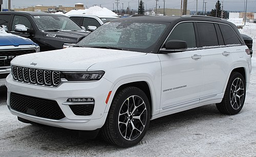

Jeep is an American automobile brand, now owned by multi-national corporation Stellantis. Jeep has been part of Chrysler since 1987, when Chrysler acquired the Jeep brand, along with other assets, from its previous owner, American Motors Corporation (AMC).
Jeep's current product range consists solely of sport utility vehicles—both crossovers and fully off-road worthy SUVs and models, including one pickup truck. Previously, Jeep's range included other pick-ups, as well as small vans, and a few roadsters. Some of Jeep's vehicles—such as the Grand Cherokee—reach into the luxury SUV segment, a market segment the 1963 Wagoneer is considered to have started. Jeep sold 1.4 million SUVs globally in 2016, up from 500,000 in 2008, two-thirds of which in North America, and was Fiat-Chrysler's best selling brand in the U.S. during the first half of 2017. In the U.S. alone, over 2400 dealerships hold franchise rights to sell Jeep-branded vehicles, and if Jeep were spun off into a separate company, it is estimated to be worth between $22 and $33.5 billion—slightly more than all of FCA (US). Bob Broderdorf is the current CEO of the Jeep brand worldwide.
Prior to 1940 the term "jeep" had been used as U.S. Army slang for new recruits or vehicles, but the World War II "jeep" that went into production in 1941 specifically tied the name to this light military 4×4, arguably making them the oldest four-wheel drive mass-production vehicles now known as SUVs. The Jeep became the primary light four-wheel-drive vehicle of the United States Armed Forces and the Allies during World War II, as well as the postwar period. The term became common worldwide in the wake of the war. Doug Stewart noted: "The spartan, cramped, and unstintingly functional jeep became the ubiquitous World War II four-wheeled personification of Yankee ingenuity and cocky, can-do determination." It is the precursor of subsequent generations of military light utility vehicles such as the Humvee, and inspired the creation of civilian analogs such as the original Series I Land Rover. Many Jeep variants serving similar military and civilian roles have since been designed in other nations.
The Jeep marque has been headquartered in Toledo, Ohio, ever since Willys–Overland launched production of the first CJ or Civilian Jeep branded models there in 1945. Its replacement, the conceptually consistent Jeep Wrangler series, has remained in production since 1986. With its solid axles and open top, the Wrangler has been called the Jeep model that is as central to the brand's identity as the 911 is to Porsche.
At least two Jeep models (the CJ-5 and the SJ Wagoneer) enjoyed extraordinary three-decade production runs of a single body generation.
In lowercase, the term "jeep" continues to be used as a generic term for vehicles inspired by the Jeep that are suitable for use on rough terrain. In Iceland, the word Jeppi (derived from Jeep) has been used since World War II and is still used for any type of SUV.
Jeep world war 2 first car
Jeep dealership in Rockville, Maryland (2004)
Jeep 2022 car

Concepts and prototypes
1944 CJ-1 prototype
1949 Alcoa Aluminum-bodied Jeepster Coupe (prototype)[74]
1949–1950 X-98 prototype; with flat fenders, but a rounded hood and grille like the CJ-5, it may have been the first F-head-powered Jeep[75]
1950 CJ-4 prototype
1950 CJ-4M prototype
1950 CJ-4MA prototype
1952 CJ Coiler: experimental design for an all independent suspension, with portal-hub swing-axles and coil-springs[63]
1958 DJ-3A Pickup: Prototype pickup truck version of the DJ-3A
1958 Jeep Creep: prototype utility vehicle; several versions built for tests, including a Postal rig and an aircraft tug[63]
1959 Jeep J-100 Malibu and Berkeley: Later developed into the Wagoneer[63]
1960 Jeep Wide-Trac: Concept for developing a low-cost vehicle for third-world countries
1962 The Brazilian Jeepster (prototype)[76][77]
1963 Jeep XM-200: J200-based concept for developing a low-cost vehicle for third-world countries[63]
1965 Jeep/Renault Model H: A light 4x4 prototype based on the Renault 16
1966 FWD Concept Jeepvair: Similar to the Model H but with a Chevrolet Corvair powertrain
1970 XJ001
1970 XJ002
1971 Jeep Cowboy: A design study using AMC's "compact" automobile platform[78]
1977 Jeep II
1979 Jeep Jeepster II
1986 Cherokee Targa: A two-door Cherokee convertible (later revised as Jeep Freedom show car)
1987 Comanche Thunderchief: This vehicle was put into production later as the Comanche Eliminator
1989 Jeep Concept 1: Evolved into the ZJ Grand Cherokee
1989 Jeep Rubicon Wrangler: This vehicle was later put in production
1990 Jeep JJ: Essentially what would later be called the Icon
1990 Jeep Freedom:[79] A revised Cherokee Targa
1991 Jeep Wagoneer 2000: A large design concept[80]
1993 Jeep Ecco
1997 Jeep Cherokee Casablanca: A special edition of Cherokee, never produced
1997 Jeep Wrangler Ultimate Res: A tuned version of a regular TJ Wrangler developed for SEMA show
1997 Fender Jeep Wrangler
1997 Jeep Dakar: A fused version of a XJ Cherokee and TJ Wrangler
1997 Jeep Icon: A design study for the next-generation Wrangler
1999 Jeep Commander: methanol fuel cell drive train with electric motors[81]
1999 Jeep Journey
1999 Jeep Jeepster Concept
2000 Jeep Cherokee Total Exposure
2000 Jeep Varsity: Later put into production as the Compass
2000 Jeep Commander Concept: Later put into production as the XK
2000 Jeep Willys
2001 Jeep Willys2
2002 Jeep Wrangler Tabasco
2002 Jeep Wrangler Patriot: A special decal package for the Wrangler X/Sport
2002 Jeep Wrangler Mountain Biker
2004 Jeep Grand Cherokee (WJ) Concierge
2004 Jeep Treo
2004 Jeep Res
2004 Jeep Liberator CRD
2005 Jeep Hurricane: The 4-wheel steering system allows the vehicle to have both a zero turning circle, and "crab" sideways.[82] Its engine was later put in the Grand Cherokee (WK) SRT-8
2005 Jeep Gladiator Concept
2005 Jeep Aggressor (the Rezo)
2007 Jeep Trailhawk
2008 Jeep Renegade
2010 Jeep J8
2010 Jeep Nukizer: Design study inspired by the Military Kaiser M-715
2011 Jeep Wrangler Pork Chop
2011 Jeep Compass Canyon: uses a 2+1⁄8-inch (5.4 cm) lift
2011 Jeep Cherokee Overland
2012 Jeep Mighty FC: inspired by the 1956 to 1965 Forward Control vehicles Jeep sold
2012 Jeep J-12 Concept: recalling the 1962–1971 Gladiator pickups
2013 Jeep Wrangler Mopar Recon
2013 Jeep Grand Cherokee Trailhawk EcoDiesel
2013 Jeep Wrangler Stitch
2013 Jeep Wrangler Flattop: featuring a one-piece, windowless hardtop
2014 Jeep Wrangler Level Red
2014 Jeep Cherokee Dakar
2014 Jeep Wrangler MOJO
2015 Jeep Chief
2015 Jeep Wrangler Africa
2015 Jeep Wrangler Red Rock Responder
2015 Jeep Staff Car: a tribute to Jeep's military history starting with World War II